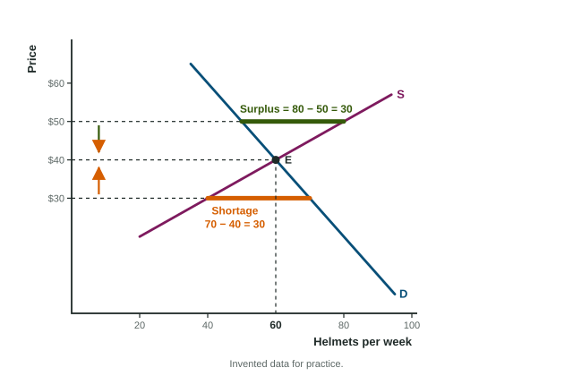

Market Disequilibrium and Changes in Equilibrium
At any price other than equilibrium the market is in disequilibrium: below it a shortage pushes the price up, above it a surplus pushes it down, until quantity demanded equals quantity supplied.
Part 1 · Hook
Why this matters
Part 2 · Before you start
What this builds on
Part 3 · Prerequisite check
Quick check before you start
1. Market equilibrium is the price at which
- quantity demanded equals quantity supplied
- sellers earn the most
- buyers pay the least
- demand and supply both shift
Show the answer
At equilibrium the market clears.
- Correct: quantity demanded equals quantity supplied:
- sellers earn the most:
- buyers pay the least:
- demand and supply both shift:
2. A rise in buyers' incomes for a normal good
- shifts demand right
- shifts supply right
- moves buyers along demand
- shifts demand left
Show the answer
Income is a demand shifter; for a normal good, more income means more demand.
- Correct: shifts demand right:
- shifts supply right:
- moves buyers along demand:
- shifts demand left:
3. A rise in the price of an input
- shifts supply left
- shifts supply right
- shifts demand left
- moves sellers along supply
Show the answer
Costlier inputs mean less offered at each price.
- Correct: shifts supply left:
- shifts supply right:
- shifts demand left:
- moves sellers along supply:
Part 4 · See it
See it first

Part 5 · Step by step
How it works, step by step
- Demand rises (a curve shifts right)at the old price, quantity demanded exceeds quantity supplied: a shortage
- Buyers compete for the scarce unitsthe price rises
- The price risesquantity supplied rises along supply and quantity demanded falls along the new demand curve
- The two quantities meeta new equilibrium with a higher price and a larger quantity
Part 6 · Key ideas
Key ideas
- Below equilibrium: a shortage, quantity demanded minus quantity supplied, pushes the price up. Above it: a surplus, quantity supplied minus quantity demanded, pushes the price down.
- One shift: demand moves price and quantity the same way; supply moves them opposite ways.
- Two shifts at once (simultaneous shifts): one of price or quantity is indeterminate unless you know which shift is larger.
- A shift changes consumer, producer and total surplus; recompute each triangle at the new equilibrium.
- The more inelastic the curve that does not shift, the more the change shows up in price rather than quantity.
Part 7 · Misconception
A common mistake
The wrong idea: Above the equilibrium price there is too much supply, so the supply curve shifts left until the market clears.
What actually happens: Above equilibrium, quantity supplied exceeds quantity demanded at that price: a surplus. Neither curve shifts. The price falls, sellers move down along supply and buyers along demand, until the two quantities are equal.
Part 8 · Check yourself
Check yourself
Exam-style questions. Anything you miss goes into your review queue.
Data
The market for bike helmets in Dunmore
| Price | Quantity demanded | Quantity supplied |
|---|---|---|
| $20 | 80 | 20 |
| $30 | 70 | 40 |
| $40 | 60 | 60 |
| $50 | 50 | 80 |
| $60 | 40 | 100 |
1. At a price of $30, is there a shortage or a surplus of helmets, and how large is it? Give the size of the gap in helmets.
Type a number. A four-function calculator is allowed, as on the exam.
Show the answer
At $30, quantity demanded is 70 and quantity supplied is 40. Quantity demanded is larger, so there is a shortage of helmets.
- Answer: 30
2. If the price of helmets starts at $30, what happens next, and why?
- The price falls toward $20 as sellers clear their stock
- Demand shifts left until it meets supply at $30
- The price rises toward $40 as buyers compete for too few helmets
- The price stays at $30 because 40 helmets are sold
Show the answer
With a shortage, buyers compete for too few helmets and sellers find they can charge more. The price rises; as it does, quantity demanded falls and quantity supplied rises until they meet at $40.
- The price falls toward $20 as sellers clear their stock: Sellers have too few helmets, not too many.
- Demand shifts left until it meets supply at $30: A shortage changes the price; it does not shift a curve.
- Correct: The price rises toward $40 as buyers compete for too few helmets: Right: a shortage pushes the price up.
- The price stays at $30 because 40 helmets are sold: A gap between the quantities pushes the price to change.
Scenario
Olive oil in Teralia: two news items in one season
Teralia is an invented country with a large market for olive oil. In one season:
- A long drought ruins much of the olive harvest, so presses have fewer olives to work with.
- A widely reported medical study finds that olive oil is good for the heart, and many families decide to cook with it.
No other news affects the market.
3. What does the drought alone do to the market for olive oil in Teralia?
- Demand decreases: price and quantity fall
- Supply decreases: price and quantity both fall
- Supply increases: price falls and quantity rises
- Supply decreases: price rises and quantity falls
Show the answer
Fewer olives raise the cost of making oil, so supply shifts left. Alone, that raises the equilibrium price and lowers the equilibrium quantity.
- Demand decreases: price and quantity fall: The drought affects producers, so supply shifts.
- Supply decreases: price and quantity both fall: A supply decrease raises the price.
- Supply increases: price falls and quantity rises: A ruined harvest lowers supply.
- Correct: Supply decreases: price rises and quantity falls: Right: a leftward supply shift.
4. With both news items together, what happens to the equilibrium price and quantity of olive oil?
- The price and the quantity both rise
- The price rises; the change in quantity is indeterminate
- The quantity falls; the change in price is indeterminate
- The price rises and the quantity falls
Show the answer
The drought (supply left) and the study (demand right) both push the price up, so the price rises. The drought lowers quantity and the study raises it, so the change in quantity is indeterminate without the sizes of the shifts.
- The price and the quantity both rise: The drought alone lowers quantity, so the total change is unknown.
- Correct: The price rises; the change in quantity is indeterminate: Right: both shifts raise the price, but they pull quantity in opposite directions.
- The quantity falls; the change in price is indeterminate: Both shifts push the price the same way: up.
- The price rises and the quantity falls: The study raises quantity, so its change depends on which shift is larger.
5. A popular video makes padel, a racket sport, a craze. Shift the right curve in the market for padel rackets and mark the new equilibrium.
Work on the graph (it needs JavaScript), then check.
Show the answer
Tastes shift demand right. The new equilibrium lies up and to the right along supply: a higher equilibrium price and quantity.
- Key: demand shifts right
Part 9 · Summary
Summary
Part 10 · Up next
What comes next
Part 11 · Connections